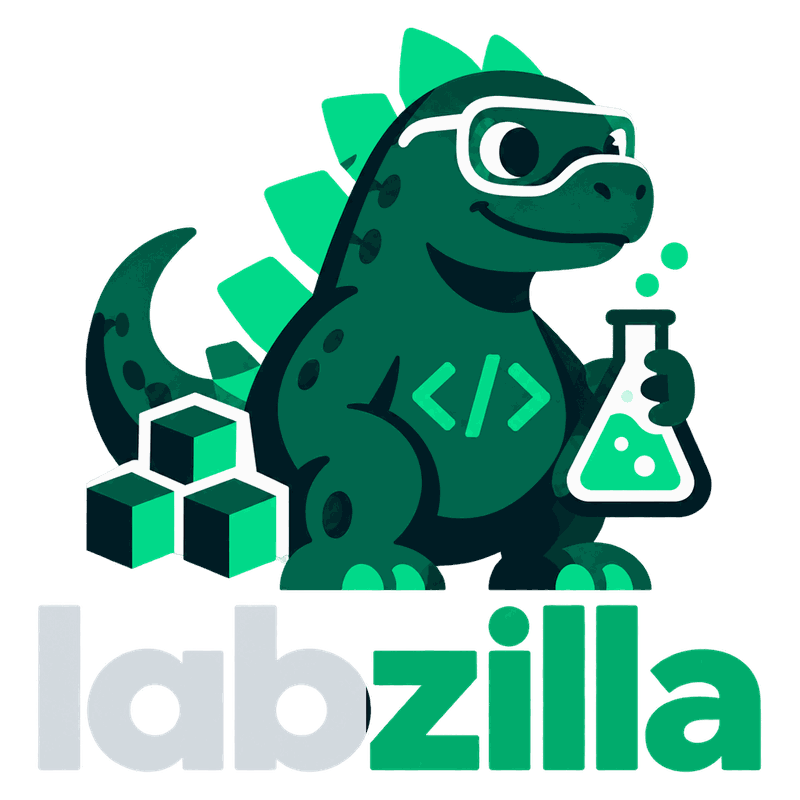
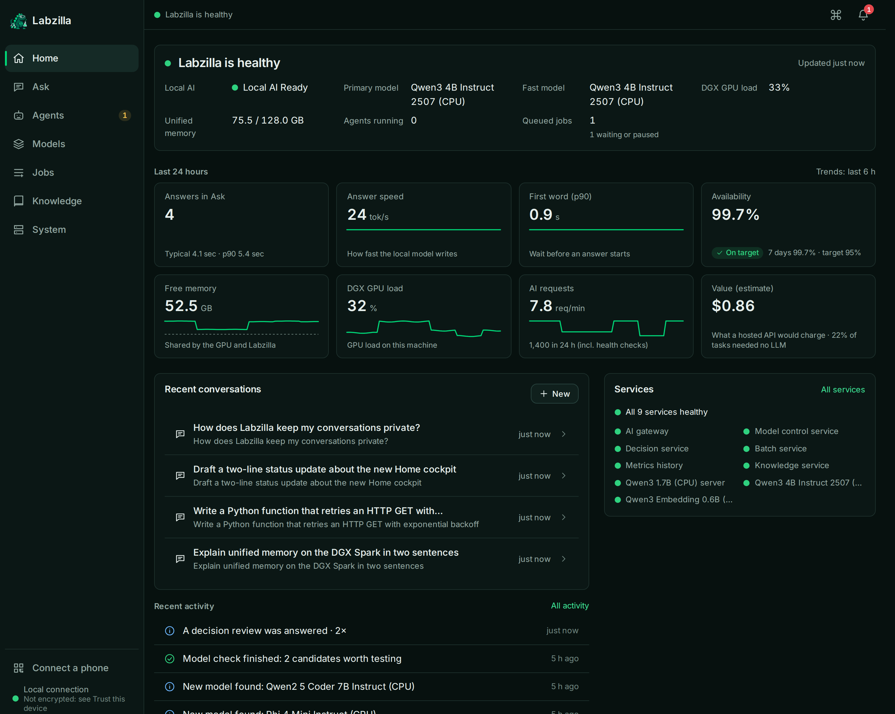

The k3s platform
Longhorn storage, MinIO backups on- and off-site, Prometheus and Grafana, MetalLB, and Tailscale. All of it is GitOps-managed by Argo CD. A push to main that touches the platform paths syncs within about three minutes.

Private AI · one DGX Spark · 🦖
The infrastructure and private AI platform behind tiny-dgx, a DGX Spark (GB10, arm64, 128 GB unified memory). Local models, routing to the right one, decisions that escalate on measured confidence, a knowledge layer, and a cockpit console you can pair to a phone. The cluster is single-node k3s. GitOps is Argo CD.
Status, 2026-10-01. On this reference host, local models run on the CPU. Yielding the GPU to another process is an optional integration (primary_workload.enabled, off unless you turn it on). Without it, Labzilla does not wait on an external scheduler. Details under hardware.
Two projects share one host, one cluster, and one set of local credentials. The console at https://labzilla.local is the everyday door — on the home network, not on the public internet.
Longhorn storage, MinIO backups on- and off-site, Prometheus and Grafana, MetalLB, and Tailscale. All of it is GitOps-managed by Argo CD. A push to main that touches the platform paths syncs within about three minutes.
An OpenAI-compatible gateway over local models, Decision Engineering (typed Jev decisions with calibrated escalation), a persistent knowledge layer, model lifecycle, a batch queue, and the Labzilla Console for web and phone. It runs on the platform.
Applications call a single OpenAI-compatible endpoint and ask for logical models such as local/default or local/auto, never for a Hugging Face id. Every response says what served it. The gateway yields when the primary workload needs the machine.
An alias walks the first healthy profile in its chain. Fallback is recorded, not hidden. local/auto checks whether the question needs live data, then picks the smallest tier that fits.
The rule is: don’t generate when you only need to decide. Traces are mined for decisions hiding in LLM calls, turned into versioned Jev questions, linted, tested, shadowed, calibrated per decision, and promoted only by a person. Below the threshold, the step escalates.
Typed Markdown repos of decisions, evidence, incidents, and methods. A graph assembles context. An MCP server (lif-knowledge) lets agents resume work and keep the provenance.
Home answers whether Labzilla is healthy, how fast and available local AI is, what the DGX is doing, and what happened. Ask streams a reply with a receipt: model, device, time, and route. Pair a phone from the sidebar: scan the QR, check that both screens show the same 6-digit code, then approve. Add to Home Screen installs it as an app.
The Understanding Compiler turns “help me understand” into one canonical explanation, then picks the cheapest representation that carries it: a summary, a causal diagram, a table, or an interactive simulation. Renderers cannot add facts.
Hugging Face discovery, then benchmark, canary, promotion, and rollback. The Control Center is the expert view: models, calibration, cascades, traces, and the review queue.
A durable SQLite queue for work that should yield to the primary workload. If the batch service is down, /v1/batch returns 503 and items resume from their checkpoint.
Measured 2026-10-01 on 267 labelled agent decisions (10 decisions). At a 0.9 threshold, 68% resolved automatically and those automatic answers were all correct. The labels are synthetic and not yet reviewed by a person. Kimi K3 was not configured for that run. Benchmark write-up.

lif/apps/console/e2e/readme_shots.mjs), not from a live system.Services, as drawn in lif/docs/ARCHITECTURE.md. Gateway, controller, decision-fabric, and batch run from one image; the Deployment picks the module. Model servers are llama.cpp.
Don’t generate when you only need to decide.
An agent step tries the cheapest executor that can do it correctly. The platform keeps measuring whether that is still true.
Exact results.
Bounded judgment, when confidence clears that decision’s calibrated threshold.
Generation, or cases the judgment still finds uncertain.
Hard cases, opt-in. In the cascade, and left disabled unless turned on.
Irreversible or still unresolved, or a safe default.
Traefik on websecure. Inside the cluster the gateway is http://gateway.ai-system.svc:8080.
Auth, rate limit, privacy, route, yield to the primary workload, fallback, and a deterministic cache for non-streaming temperature: 0.
Qwen3-4B, an optional 1.7B the memory guard can shed, and 1024-dim embeddings. If one fails, the router walks the alias chain and says so.
Registry and lifecycle, hosted Jev (jev-1.13.0) plus rule fallbacks, and the batch queue. Longhorn holds their SQLite volumes.
gpusched is the only GPU admission authority. LIF reads it. Argo CD syncs the homelab paths from main. LIF itself is applied by hand.
| Alias | Served by | Notes |
|---|---|---|
| local/instant | 1.7B, else 4B | Falls back to 4B while the memory guard has shed the 1.7B. |
| local/fast, local/default, local/batch | 4B, else 1.7B | local/default is the usual ask. |
| local/reasoning, local/code | 4B | Marked degraded: true. Below the alias size floor (30B / 14B). |
| local/embedding | Qwen3-Embedding-0.6B | 1024 dimensions. |
| local/vision, local/rerank | none | Returns 503 with the reason. |
| local/web | none yet | Falls through to local/default. |
| local/auto | route | Live-data check, then the smallest tier that fits. |
One node. Memory is shared between the CPU and the GPU, so every workload gets requests and limits. This is the machine the repo is written for, not a general installer matrix.
| Piece | What the repo says |
|---|---|
| Machine | tiny-dgx, an NVIDIA DGX Spark. GB10, one GPU, arm64. |
| CPU | 20 ARM cores: 10 Cortex-X925 and 10 Cortex-A725. |
| Memory | 128 GB unified LPDDR5X. CPU and GPU share it, and they share one bus. |
| Cluster | Single-node k3s. One replica means no in-cluster redundancy. Backups are the safety net. |
| GPU admission | Optional. On this host, gpusched is the admission authority and LIF is a read-only client when primary_workload.enabled is true. That host’s other residents pin about 107 GB, so admissible GPU memory is about 0.6–1.2 GiB. A machine without that scheduler runs Labzilla on its own. |
| LIF models | On the CPU, via llama.cpp. Tier 0 is qwen3-4b-instruct-2507-q4km-cpu, about 21 tok/s on the A725 cores (2026-10-01). Optional qwen3-1.7b. Embeddings: qwen3-embedding-0.6b. |
| Voice | Chatterbox TTS on the tailnet leases the GPU through gpusched only while it has work, and falls back to the CPU when it cannot. |
| To hack on the repo | Python ≥ 3.12 (lif/pyproject.toml). tools/setup.sh enables the pre-commit guard, creates the private roots, and builds lif/.venv. |
| To open the console | tools/labzilla from Linux or macOS: doctor, status, trust the LAN certificate, open https://labzilla.local. Phones use Trust this device in the console. |
Only PUBLIC data is ever sent to Jev. The default data class is CONFIDENTIAL. Prompts stay on the console unless someone marks one “Allow Jev routing”.
From the root README. tools/setup.sh is safe to re-run. It does not deploy the cluster — platform setup is seven acts in homelab/README.md, and LIF deploy steps are in DEPLOYMENT.md.
git clone git@github.com:MoRohn/labzilla.git ~/labzilla && cd ~/labzilla
tools/setup.sh # pre-commit guard, private roots, lif/.venvtools/labzilla # doctor → status → trust (if needed) → open the consolelabzilla checks this machine, checks Labzilla, installs its certificate after verifying the fingerprint, and opens the console. tools/setup.sh puts the command on your PATH.https://labzilla.local (also https://labzilla.tiny-dgx.lan). The CA only covers those names.Device-by-device certificate steps, the hosts-file fallback, and what still works before the CA is trusted: Use Labzilla in the README.
The repository is public. Credentials, production measurements, and personal notes stay in git-ignored secrets/, private/, and personal/. A pre-commit guard refuses to commit them.